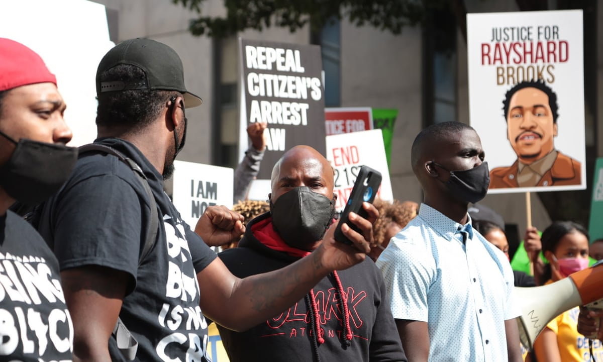

In the year 2020, Rayshard Brooks was asleep in his car, blocking the drive-through lane in a fast food restaurant. Police officers then talked to Rayshard Brooks for more than 40 minutes after complaints that he seen asleep in his car. He was then told that he drank to much and they proceded to restrain him. He was then shot twice to the back, causing his death. After the incident, Rolfe, one of the police officers was fired, and left duty with 11 charges including felony murder. The other police officer Brosnan, faced a number of charges like aggravated assault.

On June 19, 2020 CBS Evening News made a report regarding Brooks' death. In this report, we can see how brutal the police treated Brooks on the unfortunate event on the night of Brooks' death. It is also seen that Brooks was talking about the bad justice system in America is, and his death just prove that. Click the image of Rayshard Brooks to see the full report.
Here are social media links related to the Black Lives Matter Movement. Also above, is the link for the official BLM website.
image sources: https://interactive.aljazeera.com/aje/2020/know-their-names/index.html, https://en.as.com/en/2020/06/15/other_sports/1592238714_110162.html